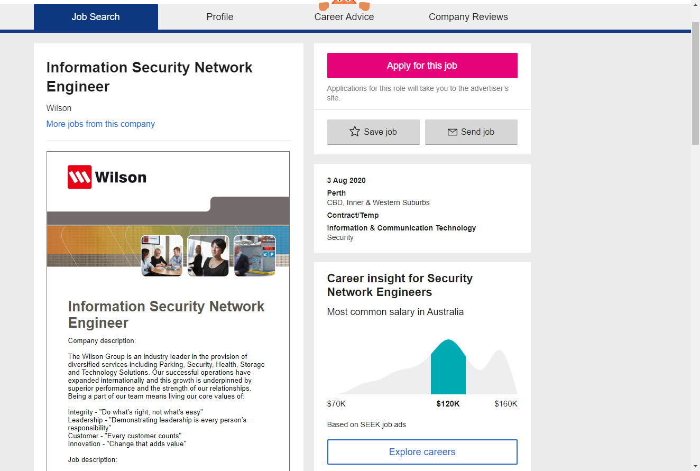

Intro

Name: Jiageng Chen
Student Number: S3801520
Email address: s3801520@student.rmit.edu.au.
I m a Rmit student
Hello, my name is Jiageng Chen. Call me Kris. I now live in MEL City.
I am taking this course as part of my BACHELOR's degree in Information Technology.
I choose RMIT rather than other universities because RMIT can teach me a lot of things,
I can get a lot of useful resources in RMIT, which is very important for creating a career in the field of information technology.
In my spare time, I like to spend time playing games,
trying different foods, watching TV shows and movies, learning about emerging technologies,
which will improve our lives in the future. My passion is to learn, create and explain things
that improve people's lives. At this stage, I don't know what I can do in the IT industry,
but I want to improve my ability to do a program project.
- I like playing basketball
- I like playing electronic games
- Sometimes I will watch the movie alone
- I m a positive person
Background

My background is the bachelor of Information Technology...
I have learned servel programming languages.
I've been at RMIT for 0.5 years now, studying a few subjects including - Introduction to Information Technology, Software Engineering in IT, User-centred Design, and Security in Computing.
Q1.What makes IT interesting for you?
There are two reasons why I like IT. The first is that IT is a very interesting major. I have been fond of playing games since Childhood. After that, I taught myself programming. Although I was tortured by the code every time, the happiest time of every day was the time when I typed the code. Secondly, as an IT major, I can get a good salary after graduation, and I can meet people from different fields to discuss and study together, so I like IT.
Q2:What lead you to study at RMIT?
Because Rmit University is a world-renowned university, its courses such as cloud computing, big data, mobile computing, application programming, security, network systems, games and multimedia are very well known around the world. And RMIT is one of the world's top 100 universities in computer science and information systems. And Rmit has thousands of students from over 100 countries and regions who are currently studying with me, sharing experiences with me, making my learning better. The most important thing is that Rmit University has the best teachers in Melbourne and even Australia. These teachers can bring me the best knowledge of the industry, which can make me better and thus get a good job.
Q3;What do you expect to learn during your studies?
I want to acquire more profound knowledge in the study of RMIT, not only theoretical knowledge, but also practical operation and application in computers. I hope what I have learned will be of great help to my future work. Most importantly, I want to learn more about code during my study at RMIT, so as to exercise my programming ability and master the core elements of this industry.
Q4:What do you hope to do after graduation?
After I graduate, I should choose the field of artificial intelligence. Because this field shows so much promise, all industries will use ARTIFICIAL intelligence. In terms of production, artificial intelligence is expected to play an important role in the transformation of traditional agriculture in the future. For example, through remote sensing satellites, unmanned aerial vehicles and other monitoring of the macro and micro conditions of China's arable land, artificial intelligence automatically decides (or recommends to the administrator) the most suitable planting scheme, and comprehensive scheduling of various agricultural machinery and equipment to complete the implementation of the scheme, so as to maximize the liberation of agricultural productivity. And when I work in the field of artificial intelligence, I can create some good products to enrich the quality of my life.
Ideal Job

Really anything that continues to push me further...
https://www.seek.com.au/job/50337236?type=standout#searchRequestToken=df643f72-5bac-4375-986e-09768be8387b
I'm very much interested in the security field and business management, so I'd hope to move into one of those areas and continue learning of the many different facets of IT.
My position is to help the company to provide appropriate network security solutions, so that the company can access the correct information anytime and anywhere. The second is to check and protect the company's database data from theft. The most attractive part of this position is that I can fight against hackers, so as to exercise my network security ability. Besides, this job can bring me a good salary.
The requirements for this position are very high. It requires more than 3 years of experience in security, deployment and support of company and operating network, Cisco CCNP (minimum) security certification, practical technical experience in Cisco firewall, web proxy, endpoint protection, NGFW, email security gateway, Siem, identity protection, DLP and data encryption solutions. Understanding of network event response process and data encryption technology and standards.
So far I haven't reached this level. I don't have all kinds of valid certificates and excellent network security logic. I hope I can improve my ability in these aspects in the future.
Project idea.
Overview.
This design is to build a dynamic second-hand resource exchange platform. People can trade second-hand goods through the platform, allowing some people to buy their favorite products at the lowest price. Moreover, the construction of the platform is conducive to protecting the environment and maximizing the utilization rate of resources. I plan to target universities in Victoria, so that students and teachers can make full use of this website for trading.
Motivation.
Due to the rapid development of the Internet in recent years, the Internet can provide people with too many possibilities. I can use the advantages of the Internet to change the traditional business operation mode that people buy second-hand goods in the market, so that people can make full use of the convenience of the Internet to expand the possibility of trading second-hand goods. Moreover, the Internet can provide a cheap means of communication, combining buyers and sellers, manufacturers and partners closely together, eliminating the obstacles brought by time and space, thus greatly saving transaction costs and expanding the scope of transactions. Excellent websites like Amazon and Taobao provide good examples. In this design, I can refer to some of the advantages of these websites. Up to now, I haven't found that schools in Victoria have this website to trade second-hand goods, but in reality, many people need this platform to sell things they don't need, so I plan to do this project.
Description.
First of all, I identified four main functions. The first is user management, the second is administrator management, the third is search function, and the fourth is query function.
User management is able to complete the registration of user's basic information input and the personal foreground and background management of user's basic information. It also includes the functions of user registration, user modification, user deletion and user's password retrieval.
Administrator management is the administrator can complete the administrator of the website commodity information, commodity transactions, member management, operation management functions.
The search function is that users can make fuzzy query and precise search according to the name and classification of goods.
The query function is that the user can confirm the selected goods by viewing the shopping cart, and determine the payment expenses through the order query.
Now the front-end design is on the home page, where customers can quickly get information about products, such as newly released products, popular products, products recommended by merchants, sales rankings, and new product recommendations. This allows customers to get the goods they need in the shortest time. And when we design, we see that new users register in the platform, and members can log in directly here, modify their information, view orders, view shopping cart and other operations. In a word, the idea I intend to design on the home page is to facilitate customers' shopping and greatly improve their shopping efficiency. And I will add some beautiful pictures to set off the homepage of the website.
The design of the back-end is to expand in the first four main functions, the first administrator to manage and protect users, view user information and consumption information. A database can be set up to store user data. When the consumption amount reaches a certain amount, the user will be given some discount. Second, in the aspect of commodity management, when adding a commodity, it is necessary to judge whether the name, manufacturer and production date of the commodity are the same, and if so, update the quantity of the original commodity. If not, you can add the data of the book in the database. When some goods are sold out, I should design a detection program to automatically take the goods off the shelf. The user cannot search for the product. Third, in the user management, when the user cancels the goods in his shopping cart, the database should increase the inventory operation.
Tools and Technologies.
I will use idea, SQL and visual studio to write the website. Because these softwares are easy to use for us programmers. And the software is free. But the most important thing is that I need a computer that can run these software, which is very necessary. And in doing this project, I need to learn HTML, Java and other technologies. I need to be very proficient in order to do a complete website, but my ability is not enough, I need to study deeply in the programming.
Skills Required
This project needs a lot of programming languages, such as Java, CSS, C + +, PHP, etc. I need to learn these languages to help my project. Second, the hardware required for this project is a very powerful computer, I need it to run my website quickly.
Outcome
I think that after this project is successful, I think there will be a lot of university students from Uighur coming to my website to trade. As a result, tens of thousands of second-hand goods can be reused to improve the utilization rate of resources and protect the environment. But I will face some problems. Such as website optimization and when the number of users increases, I need to consider whether my database is sufficient and other issues, all need me to solve. I should be looking for a partner who is proficient in this field to help me.
<
Personal characteristics
http://www.educationplanner.org/students/self-assessments/learning-styles-quiz.shtml?event=results&A=8&V=8&T=4
https://www.truity.com/personality-test/17315/test-results/24401716
In the Big Five Personality Test, this Test demonstrates that I am outgoing, responsible and outgoing. First, it shows that I have enough openness to accommodate the ideas in the team. Moreover, I am more capable than ordinary people to see some seemingly irrelevant concepts, which makes me more imaginative and creative than ordinary people.
Secondly, the chart shows that I am an empathetic idealist who USES insight and creativity to help others. Think about how the world is better and more beautiful
Besides, he said I was a logic mechanic. I can ensure the accuracy and efficiency of the logical system. Use mature methods to achieve real-world goals. With these advantages, I think I can help my team members to complete a better project.
Finally，i think when I look for team members, I will find some people who can make up for my shortcomings. In this way, our team is very balanced, and the work efficiency will be greatly improved.